Tree-based methods
Tree Based Methods
We will show how to grow a tree for classification. Regression trees are developed in a very similar way.
Some of these codes are taken from the Introduction to Statistical Learning book.
Carseats data
In these data, Sales is a continuous variable, and so we begin by recoding it as a binary variable.
Fit a tree
Classification tree:
tree(formula = High ~ . - Sales, data = Carseats)
Variables actually used in tree construction:
[1] "ShelveLoc" "Price" "Income" "CompPrice" "Population"
[6] "Advertising" "Age" "US"
Number of terminal nodes: 27
Residual mean deviance: 0.4575 = 170.7 / 373
Misclassification error rate: 0.09 = 36 / 400 Interpretaion
We see that the training error rate is 9%.
For classification trees, the deviance reported in the output of summary() is given by \[ -2 \sum_{m} \sum_k n_{mk} \log(\hat{p}_{mk}) \] where \(n_{mk}\) is the number of observations in the \(m\)th terminal node that belong to the \(k\)th class.
A small deviance indicates a tree that provides a good fit to the (training) data.
The residual mean deviance reported is simply the deviance divided by \(n - |T_0|\), which in this case is 400 - 27 = 373.
Plotting the tree
- One of the most attractive properties of trees is that they can be graphically displayed.
- We use the
plot()function to display the tree structure, and thetext()function to display the node labels.
Plot tree
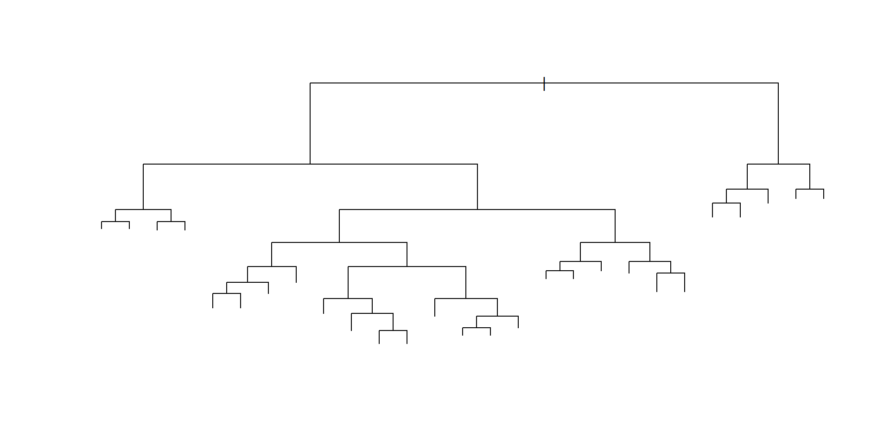Plot tree

Plot tree
Shelving location is the most important predictor here.

Tree output
- If we just type the name of the tree object,
Rprints output corresponding to each branch of the tree. Rdisplays the split criterion (e.g.Price<92.5), the number of observations in that branch, the deviance, the overall prediction for the branch (YesorNo), and the fraction of observations in that branch that take on values ofYesandNo.
Tree output in R
node), split, n, deviance, yval, (yprob)
* denotes terminal node
1) root 400 541.500 No ( 0.59000 0.41000 )
2) ShelveLoc: Bad,Medium 315 390.600 No ( 0.68889 0.31111 )
4) Price < 92.5 46 56.530 Yes ( 0.30435 0.69565 )
8) Income < 57 10 12.220 No ( 0.70000 0.30000 )
16) CompPrice < 110.5 5 0.000 No ( 1.00000 0.00000 ) *
17) CompPrice > 110.5 5 6.730 Yes ( 0.40000 0.60000 ) *
9) Income > 57 36 35.470 Yes ( 0.19444 0.80556 )
18) Population < 207.5 16 21.170 Yes ( 0.37500 0.62500 ) *
19) Population > 207.5 20 7.941 Yes ( 0.05000 0.95000 ) *
5) Price > 92.5 269 299.800 No ( 0.75465 0.24535 )
10) Advertising < 13.5 224 213.200 No ( 0.81696 0.18304 )
20) CompPrice < 124.5 96 44.890 No ( 0.93750 0.06250 )
40) Price < 106.5 38 33.150 No ( 0.84211 0.15789 )
80) Population < 177 12 16.300 No ( 0.58333 0.41667 )
160) Income < 60.5 6 0.000 No ( 1.00000 0.00000 ) *
161) Income > 60.5 6 5.407 Yes ( 0.16667 0.83333 ) *
81) Population > 177 26 8.477 No ( 0.96154 0.03846 ) *
41) Price > 106.5 58 0.000 No ( 1.00000 0.00000 ) *
21) CompPrice > 124.5 128 150.200 No ( 0.72656 0.27344 )
42) Price < 122.5 51 70.680 Yes ( 0.49020 0.50980 )
84) ShelveLoc: Bad 11 6.702 No ( 0.90909 0.09091 ) *
85) ShelveLoc: Medium 40 52.930 Yes ( 0.37500 0.62500 )
170) Price < 109.5 16 7.481 Yes ( 0.06250 0.93750 ) *
171) Price > 109.5 24 32.600 No ( 0.58333 0.41667 )
342) Age < 49.5 13 16.050 Yes ( 0.30769 0.69231 ) *
343) Age > 49.5 11 6.702 No ( 0.90909 0.09091 ) *
43) Price > 122.5 77 55.540 No ( 0.88312 0.11688 )
86) CompPrice < 147.5 58 17.400 No ( 0.96552 0.03448 ) *
87) CompPrice > 147.5 19 25.010 No ( 0.63158 0.36842 )
174) Price < 147 12 16.300 Yes ( 0.41667 0.58333 )
348) CompPrice < 152.5 7 5.742 Yes ( 0.14286 0.85714 ) *
349) CompPrice > 152.5 5 5.004 No ( 0.80000 0.20000 ) *
175) Price > 147 7 0.000 No ( 1.00000 0.00000 ) *
11) Advertising > 13.5 45 61.830 Yes ( 0.44444 0.55556 )
22) Age < 54.5 25 25.020 Yes ( 0.20000 0.80000 )
44) CompPrice < 130.5 14 18.250 Yes ( 0.35714 0.64286 )
88) Income < 100 9 12.370 No ( 0.55556 0.44444 ) *
89) Income > 100 5 0.000 Yes ( 0.00000 1.00000 ) *
45) CompPrice > 130.5 11 0.000 Yes ( 0.00000 1.00000 ) *
23) Age > 54.5 20 22.490 No ( 0.75000 0.25000 )
46) CompPrice < 122.5 10 0.000 No ( 1.00000 0.00000 ) *
47) CompPrice > 122.5 10 13.860 No ( 0.50000 0.50000 )
94) Price < 125 5 0.000 Yes ( 0.00000 1.00000 ) *
95) Price > 125 5 0.000 No ( 1.00000 0.00000 ) *
3) ShelveLoc: Good 85 90.330 Yes ( 0.22353 0.77647 )
6) Price < 135 68 49.260 Yes ( 0.11765 0.88235 )
12) US: No 17 22.070 Yes ( 0.35294 0.64706 )
24) Price < 109 8 0.000 Yes ( 0.00000 1.00000 ) *
25) Price > 109 9 11.460 No ( 0.66667 0.33333 ) *
13) US: Yes 51 16.880 Yes ( 0.03922 0.96078 ) *
7) Price > 135 17 22.070 No ( 0.64706 0.35294 )
14) Income < 46 6 0.000 No ( 1.00000 0.00000 ) *
15) Income > 46 11 15.160 Yes ( 0.45455 0.54545 ) *Training and Testing
- Need test error for proper evaluation.
- Split the observations into a training set and a test set, build the tree using the training set, and evaluate its performance on the test data.
- The
predict()function can be used for this purpose. - In the case of a classification tree, the argument
type="class"instructsRto return the actual class prediction.
Test error
set.seed(2)
train=sample(1:nrow(Carseats), 200)
Carseats.test=Carseats[-train,]
High.test=High[-train]
tree.carseats=tree(High~.-Sales,Carseats,subset=train)
tree.pred=predict(tree.carseats,Carseats.test,type="class")
table(tree.pred,High.test) High.test
tree.pred No Yes
No 104 33
Yes 13 50This approach leads to correct predictions for 0.715 cases.
Pruning
- What you just saw was the full tree.
- Next, we consider whether pruning the tree might lead to improved results.
- The function
cv.tree()performs cross-validation in order to determine the optimal level of tree complexity; cost complexity pruning is used in order to select a sequence of trees for consideration.
Recap (Classification Losses)
The 0-1 loss or misclassification error rate: \[ \sum_{m = 1}^{|T|} \sum_{x_i \in R_m} 1(y_i \neq y_{R_m}) \]
Cross-entropy (measures the ‘purity’ of a leaf)
\[ - \sum_{m = 1}^{|T|} q_m \sum_{k=1}^{K} \hat{p}_{mk} \log(\hat{p}_{mk}) \]
where \(\hat{p}_{mk}\) is the proportion of class \(k\) within \(R_m\), and \(q_m\) is the proportion of samples in \(R_m\).
- Use cross-entropy for growing the tree, while using the misclassification rate when pruning the tree.
Pruning (continued)
We use the argument
FUN=prune.misclassin order to indicate that we want the classification error rate to guide the cross-validation and pruning process, rather than the default for thecv.tree()function, which is deviance.The
cv.tree()function reports
- the number of terminal nodes of each tree considered (size),
- the corresponding error rate, and
- the value of the cost-complexity parameter used (
kcorresponds to our \(\alpha\))
Cost-complexity pruning
- Cost-complexity pruning is similar to regularization idea. You put a penalty for the size of the tree - larger trees are penalized more.
\[ \text{minimize} \sum_{m = 1}^{|T|} \sum_{x_i \in R_m} 1(y_i \neq y_{R_m}) + \alpha |T| \]
- Just like regularized methods, \(\alpha\) is a tuning parameter - we can choose a suitable value by cross-validation.
Using cv.tree()
[1] "size" "dev" "k" "method"$size
[1] 21 19 14 9 8 5 3 2 1
$dev
[1] 74 76 81 81 75 77 78 85 81
$k
[1] -Inf 0.0 1.0 1.4 2.0 3.0 4.0 9.0 18.0
$method
[1] "misclass"
attr(,"class")
[1] "prune" "tree.sequence"Output explanation
- Note that, despite the name,
devcorresponds to the cross-validation error rate in this instance. - The tree with 9 terminal nodes results in the lowest cross-validation error rate, with 50 cross-validation errors.
Plotting CV errors
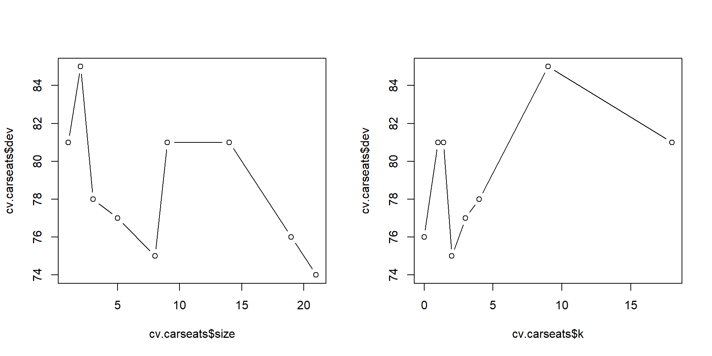Prune the tree
We now apply the prune.misclass() function in order to prune the tree to obtain the nine-node tree.
Pruned tree
- How does the pruned tree do in terms of prediction?
High.test
tree.pred No Yes
No 97 25
Yes 20 58Now precentage of correct prediction is 0.77.
Different k
- You can choose a different
k, e.g. \(k = 15\).
prune.carseats=prune.misclass(tree.carseats,best=15)
tree.pred=predict(prune.carseats,Carseats.test,type="class")
table(tree.pred,High.test) High.test
tree.pred No Yes
No 102 30
Yes 15 53Percentage of correct predictions will be lower: 0.74
Compare to the best model by CV: 0.77
How does this compare to Logistic?
Call:
glm(formula = High ~ . - Sales, family = binomial, data = Carseats,
subset = train)
Deviance Residuals:
Min 1Q Median 3Q Max
-2.05629 -0.37761 -0.08149 0.26226 2.41387
Coefficients:
Estimate Std. Error z value Pr(>|z|)
(Intercept) -3.532167 3.072193 -1.150 0.250259
CompPrice 0.133686 0.025790 5.184 2.18e-07 ***
Income 0.031353 0.009661 3.245 0.001173 **
Advertising 0.229512 0.059475 3.859 0.000114 ***
Population 0.002068 0.001882 1.099 0.271797
Price -0.145926 0.023472 -6.217 5.06e-10 ***
ShelveLocGood 7.165462 1.260501 5.685 1.31e-08 ***
ShelveLocMedium 2.938850 0.750210 3.917 8.95e-05 ***
Age -0.066072 0.018683 -3.536 0.000405 ***
Education -0.023523 0.096187 -0.245 0.806803
UrbanYes -0.233306 0.586017 -0.398 0.690541
USYes -0.645051 0.745717 -0.865 0.387034
---
Signif. codes: 0 '***' 0.001 '**' 0.01 '*' 0.05 '.' 0.1 ' ' 1
(Dispersion parameter for binomial family taken to be 1)
Null deviance: 269.99 on 199 degrees of freedom
Residual deviance: 109.95 on 188 degrees of freedom
AIC: 133.95
Number of Fisher Scoring iterations: 7Prediction
Significant predictors drive the prediction.
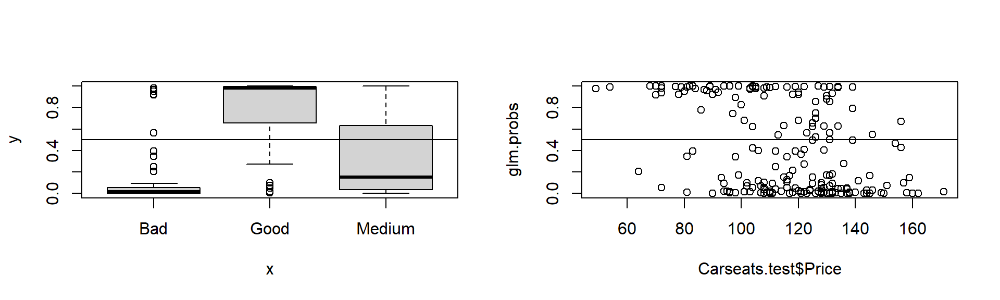Exercise
- Plot the ROC curve for both logistic and decision tree (with pruning).
- Also apply k-NN with CV and LDA on the same data-set and compare accuracies.
- Can you create an artificial data-set where decision tree will do better than logistic or LDA?
Linear Regression vs. Tree
Linear Regression: \[ f(X) = \beta_0 + \sum_{j=1}^{p}X_j \beta_j \]
Regression Tree Method: \[ f(X) = \sum_{m=1}^{M} c_m 1_{(X \in R_m)} \] where \(R_1, \ldots, R_m\) is a partition of the \(X\)-space.
Which model is better? It depends on the problem at hand.
Which model is better?

If true decision boundary is linear, classical methods work well, if it’s non-linear tree-based methods might work better.
Regression
Regression tree:
tree(formula = Sales ~ ., data = Carseats, subset = train)
Variables actually used in tree construction:
[1] "Price" "ShelveLoc" "CompPrice" "Age" "Advertising"
[6] "Population"
Number of terminal nodes: 14
Residual mean deviance: 2.602 = 484 / 186
Distribution of residuals:
Min. 1st Qu. Median Mean 3rd Qu. Max.
-4.71700 -1.08700 -0.01026 0.00000 1.11300 4.06600 Plot Regression Tree
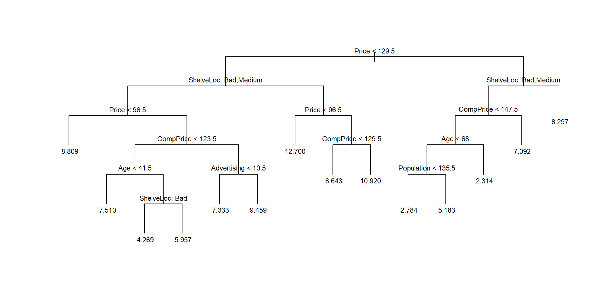CV for Regression Tree
$size
[1] 14 13 12 11 10 9 8 7 6 4 3 2 1
$dev
[1] 991.6848 1047.5699 1038.7796 1052.8238 1048.0572 1070.0402 1015.0872
[8] 1010.9374 1074.3468 1105.4908 1103.4054 1254.1947 1546.0453
$k
[1] -Inf 16.92509 19.38585 23.44178 29.89370 36.28493 50.16562
[8] 54.84825 65.75957 80.79945 90.11022 179.77305 277.78708
$method
[1] "deviance"
attr(,"class")
[1] "prune" "tree.sequence"Plot the CV error
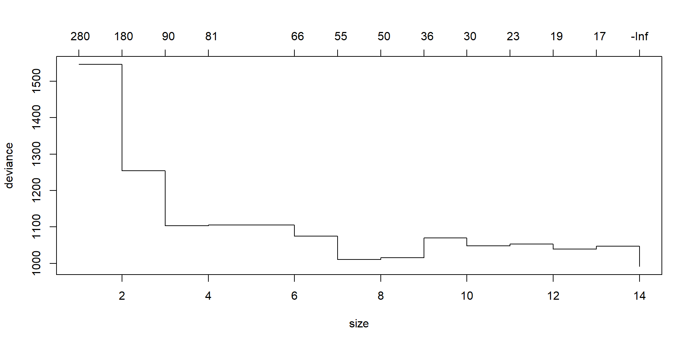Manually plot the deviance
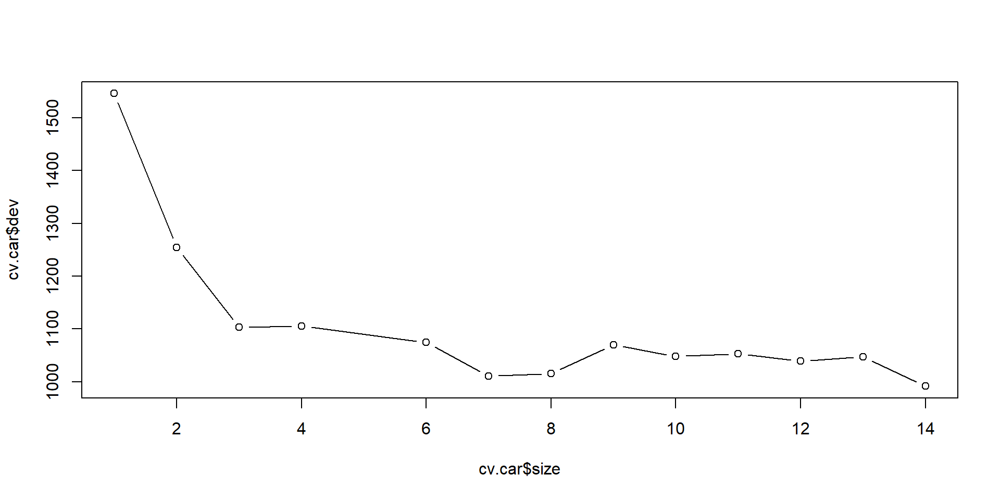Prune the Regression Tree
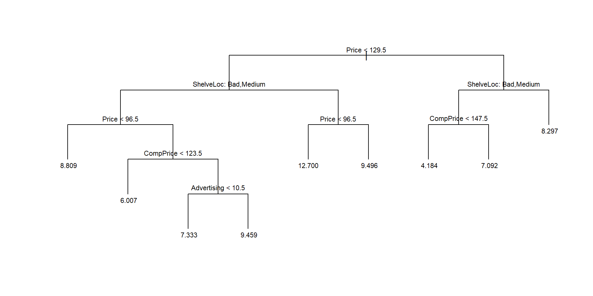MSE with full tree
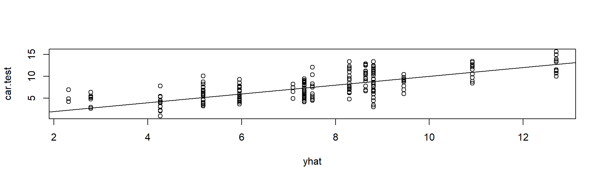MSE with Pruned Tree
yhat=predict(prune.car,newdata=Carseats[-train,])
car.test=Carseats[-train,"Sales"]
mean((yhat-car.test)^2)[1] 4.847671
Next: Bagging
Bagging and Random Forest
Here we apply bagging and random forests to the Boston data, using the randomForest package in R.
Random Forest
- Ensemble Learning: Generae many predictors and aggregate their results.
- Two well-known methods: Boosting (Shapire et al., 1998) and Bagging (Breiman, 1996).
- In boosting, successive trees give extra weight to points incorrectly predicted by earlier predictors. In the end, a weighted vote is taken for prediction.
- In bagging, successive trees do not depend on earlier trees - each is independently constructed using a bootstrap sample of the data set.
We use the Boston housing data
'data.frame': 506 obs. of 14 variables:
$ crim : num 0.00632 0.02731 0.02729 0.03237 0.06905 ...
$ zn : num 18 0 0 0 0 0 12.5 12.5 12.5 12.5 ...
$ indus : num 2.31 7.07 7.07 2.18 2.18 2.18 7.87 7.87 7.87 7.87 ...
$ chas : int 0 0 0 0 0 0 0 0 0 0 ...
$ nox : num 0.538 0.469 0.469 0.458 0.458 0.458 0.524 0.524 0.524 0.524 ...
$ rm : num 6.58 6.42 7.18 7 7.15 ...
$ age : num 65.2 78.9 61.1 45.8 54.2 58.7 66.6 96.1 100 85.9 ...
$ dis : num 4.09 4.97 4.97 6.06 6.06 ...
$ rad : int 1 2 2 3 3 3 5 5 5 5 ...
$ tax : num 296 242 242 222 222 222 311 311 311 311 ...
$ ptratio: num 15.3 17.8 17.8 18.7 18.7 18.7 15.2 15.2 15.2 15.2 ...
$ black : num 397 397 393 395 397 ...
$ lstat : num 4.98 9.14 4.03 2.94 5.33 ...
$ medv : num 24 21.6 34.7 33.4 36.2 28.7 22.9 27.1 16.5 18.9 ...Bagging
- Bagging is a special case of a random forest with \(m = p\).
randomForest()can perform both random forests and bagging.
- The argument
mtry=13indicates that all 13 predictors should be considered for each split of the tree. - In other words, bagging should be done.
importance=TRUE: should importance of the predictors be assessed?
Bagging output
Test error
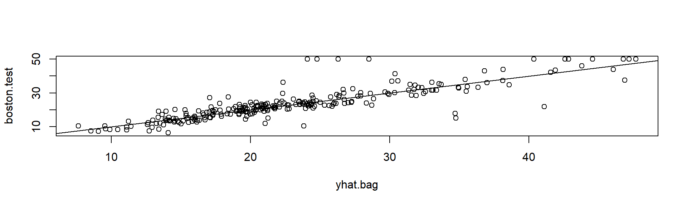Bagging is much better than using a single Tree
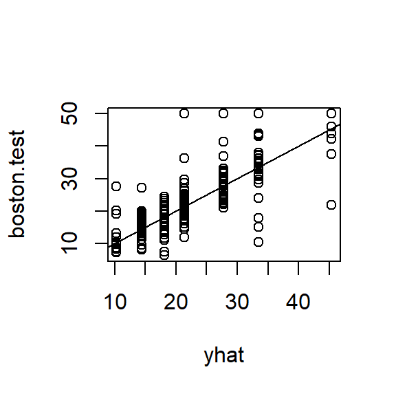Number of Trees
- By default
ntree = 500. - We could change the number of trees grown by
randomForest()using thentreeargument:
bag.boston=randomForest(medv~.,data=Boston,subset=train,mtry=13,
ntree=25)
yhat.bag = predict(bag.boston,newdata=Boston[-train,])
mean((yhat.bag-boston.test)^2)[1] 22.99145- This is still bagging as
mtry = 13. What happens to the test error?
Random Forest
Random forest improves over bagging by a small tweak that decorrelates the trees.
Just like bagging, we build many decision trees on bootstrapped samples … but when building a tree, each time a split is considered in the tree, a random sample of \(m\) predictors is chosen from the full set of \(p\) predictors.
A fresh sample of \(m\) predictors are chosen for each split and typically \(m = \sqrt{p}\) for classification and \(p/3\) for regression.
Random Forest
Growing a random forest proceeds in exactly the same way, except that we use a smaller value of the
mtryargument.By default,
randomForest()uses \(p/3\) variables when building a random forest of regression trees, and \(\sqrt{p}\) variables when building a random forest of classification trees.Here we use
mtry = 6.
Calculate MSE
- We can calculate mean squared error on the test data set as usual.
set.seed(123)
rf.boston=randomForest(medv~.,data=Boston,subset=train,mtry=6,importance=TRUE)
yhat.rf = predict(rf.boston,newdata=Boston[-train,])
mean((yhat.rf-boston.test)^2)[1] 19.11609- The test set MSE is 19.1160948.
Importance
- Using the
importance()function, we can view the importance of each variable.
%IncMSE IncNodePurity
crim 16.7422915 962.64560
zn 4.5870114 103.88463
indus 5.5192594 625.85603
chas 0.4874899 36.22561
nox 14.8880957 750.14221
rm 32.1145236 7538.05524
age 11.8694265 590.10533
dis 12.2907793 692.36696
rad 3.5801323 88.23554
tax 8.7131066 374.44966
ptratio 9.1472863 836.16087
black 6.1578417 257.56556
lstat 30.5232049 6360.09452- Mean decrease of accuracy in predictions on the out of bag samples when a given variable is excluded from the model
- Measure of the total decrease in node impurity that results from splits over that variable, averaged over all trees.
Variable Importance plot
- Two different plots: percentage increase in MSE and increase in node purity.
- Note that the order of variables in two plots do not match here. In general, they won’t necessarily match.
Try 3 different sizes (m = 13, 6 and 4)
ntreeset = seq(10,300,by = 10)
mse.bag = rep(0,length(ntreeset));mse.rf1 = rep(0,length(ntreeset));
mse.rf2 = rep(0,length(ntreeset));
for(i in 1:length(ntreeset)){
nt = ntreeset[i]
bag.boston=randomForest(medv~.,data=Boston,subset=train,mtry=13,ntree=nt)
yhat.bag = predict(bag.boston,newdata=Boston[-train,])
mse.bag[i] = mean((yhat.bag-boston.test)^2)
rf.boston=randomForest(medv~.,data=Boston,mtry = 6, subset=train,ntree=nt)
yhat.bag = predict(rf.boston,newdata=Boston[-train,])
mse.rf1[i] = mean((yhat.bag-boston.test)^2)
rf.boston=randomForest(medv~.,data=Boston,mtry = 4, subset=train,ntree=nt)
yhat.bag = predict(rf.boston,newdata=Boston[-train,])
mse.rf2[i] = mean((yhat.bag-boston.test)^2)
}Plot the test error curve
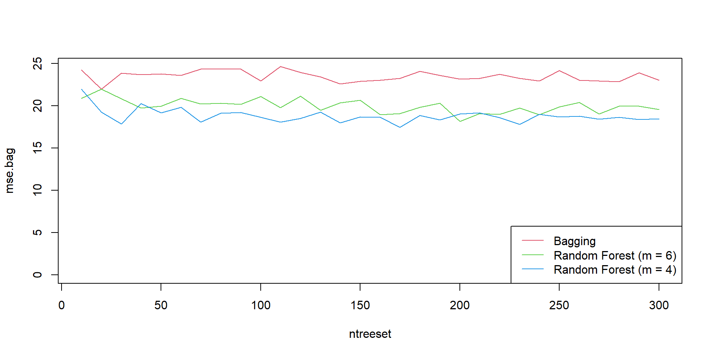Exercise (at home)
Using a small value of \(m\) in building a random forest will typically be helpful when we have a large number of correlated predictors.
Apply bagging and random forests to a data set of your choice. Be sure to fit the models on a training set and to evaluate their performance on a test set.
How accurate are the results compared to simple methods like linear or logistic regression?
Which of these approaches yields the best performance?
Boosting
We run
gbm()with the optiondistribution="gaussian"since this is a regression problem; if it were a binary classification problem, we would usedistribution="bernoulli".The argument
n.trees=5000indicates that we want 5000 trees, and the optioninteraction.depth=4limits the depth of each tree.
Summary
- The usual
summary()function also produces a plot, that you can turn off by addingplotit = F. - Returns a data frame where the first component is the variable name and the second is the computed relative influence, normalized to sum to 100.
var rel.inf
rm rm 46.410886279
lstat lstat 30.102518273
crim crim 5.551760643
dis dis 4.136537460
nox nox 2.770120310
black black 2.648786173
age age 2.623099922
tax tax 2.084415706
ptratio ptratio 2.045893978
indus indus 0.774578360
rad rad 0.639323131
zn zn 0.210219519
chas chas 0.001860246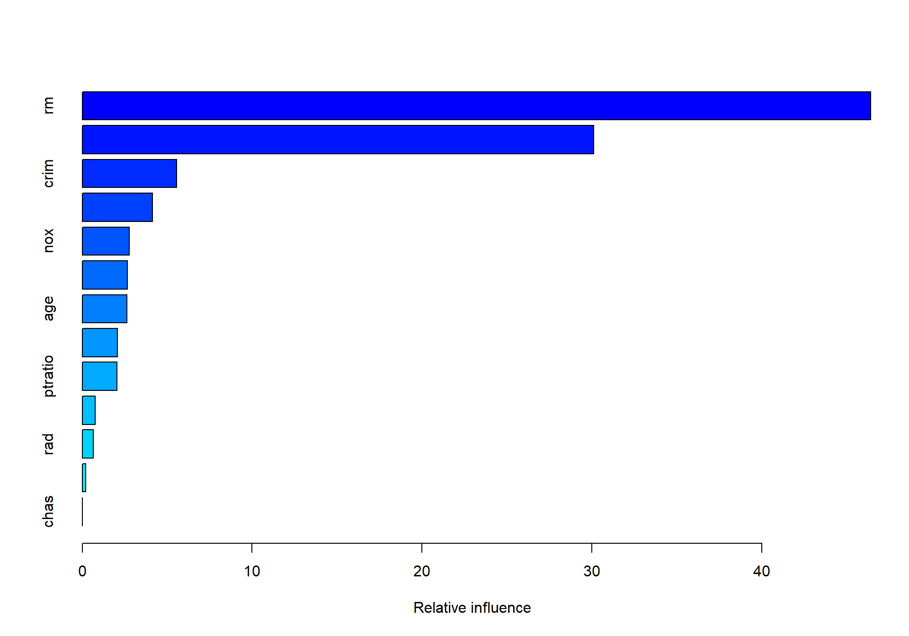
Partial dependence
An interesting feature is the partial dependence plot.
This illustrates the marginal effect of the selected variables on the response after integrating out the other variables.
MSE
- Now, we calculate the mean squared error on the test data set as before.
Different \(\lambda\)
For gradient boosting method, one can use a learning rate (\(\lambda\)) that dampens the proposed move.
That is, \(\lambda\) controls the rate at which the boosting algorithm will descend the error surface or ascend the likelihood surface: similar to a regularization parameter.
boost.boston=gbm(medv ~.,data=Boston [train ,], distribution=
"gaussian",n.trees =5000, interaction.depth =4, shrinkage =0.2, verbose =F)
yhat.boost=predict(boost.boston,newdata=Boston[-train,],
n.trees =5000)
mean((yhat.boost -boston.test)^2)[1] 19.40553